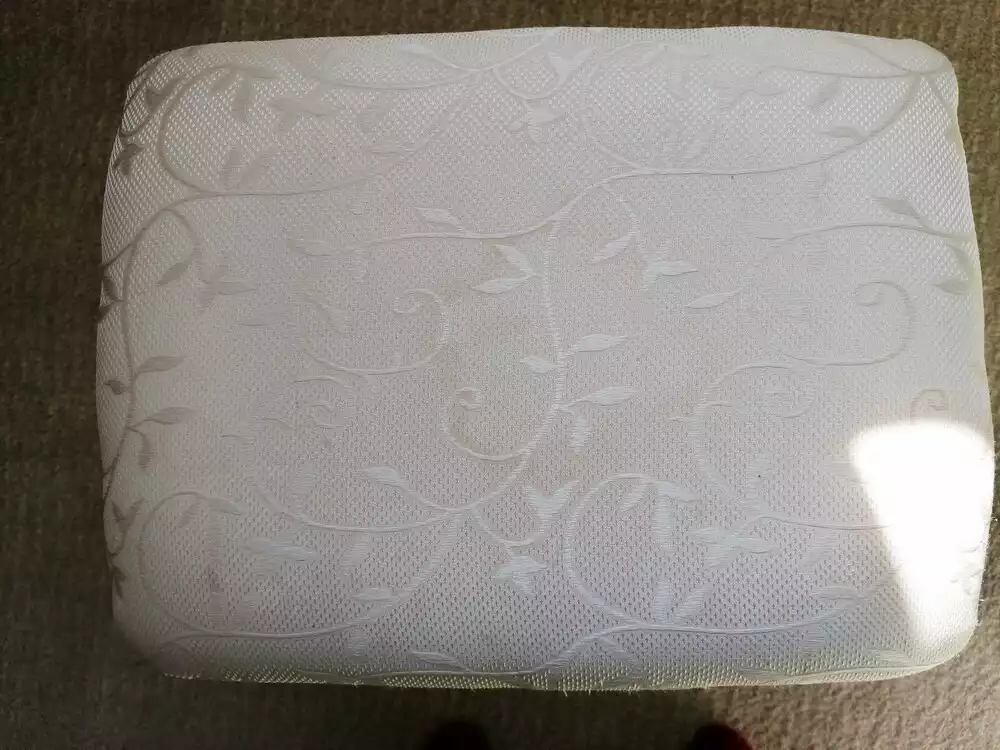
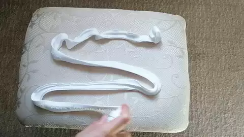
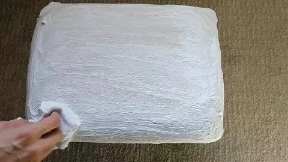
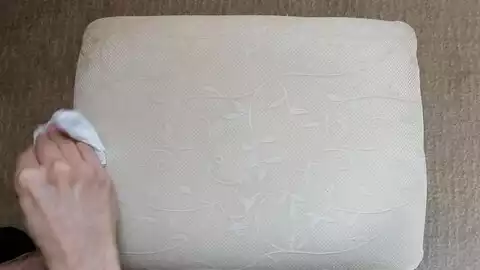
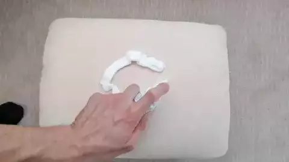
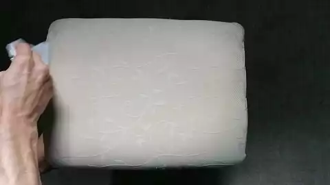

Polster reinigen mit Rasierschaum
von Marina - 10.10.2022
YouTube Videos zeigen wie auf wundersame Weise Polster wieder ganz sauber werden indem man einfach nur Rasierschaum aufs Polster reibt, 10 Minuten einwirken lässt und abwischt bzw. mit einem Nasssauger absaugt.
Eigentlich schon fast unglaublich. Aber wir haben ein fast weißes Polster mit Flecken, die wir so einfach nicht rausbekommen haben. Also haben wir es ausprobiert.
Wir haben einen weißen Hocker mit hell cremefarbenem Polster, das schon mal ein paar Spritzer Flüssig-Make-up abbekommen hat, die ich nie komplett rausbekommen hatte.
Dann kam noch ein Wasserfleck hinzu, wahrscheinlich von einem auf dem Hocker liegengebliebenen nassen Handtuch.
Artur hat bei YouTube die Rasierschaummethode entdeckt. Ich hab der ganzen Sache nicht getraut und wollte lieber Natron ausprobieren. Davor hat Artur mich aber gewarnt, wegen dem was er auch im Internet gesehen hat (Fleck wurde nur verschmiert).
Also habe ich irgendwann dem Rasierschaum zugestimmt.
Hier könnt ihr das Problemstück sehen. Die Flecken sind recht hell, aber dennoch gut zu erkennen.
Hier trägt Artur den Rasierschaum auf.
Dann verteilt er ihn gut und lässt ihn 10 Minuten einwirken.
Anschließend wischt er alles mit einem feuchten Lappen ab.
Wie man sehen kann, ist der Fleck noch da, aber er ist tatsächlich etwas heller geworden.
Und da es tatsächlich etwas geholfen hatte, haben wir den Vorgang einfach nochmal wiederholt.
Wir haben zwischendurch die Zeit vergessen und erst nach etwa einer halben Stunde hat Artur den Rasierschaum vom Hocker gewischt.
Und siehe da, der Fleck ist weg!
Fazit:
Die Rasierschaummethode funktioniert tatsächlich! Man sollte jedoch die Einwirkdauer verlängern und gegebenenfalls den Vorgang noch ein oder zweimal wiederholen, sicher auch abhängig von der Schwere des Fleckes.
Einen Nasssauger haben wir nicht und daher kam auch keiner zum Einsatz, dafür duftet der Hocker erstmal ganz frisch nach Rasierschaum. ;)
Ich kann hier jedoch leider nichts dazu sagen, was passiert, wenn man Rasierschaum auf dunklen oder bunten Stoffen anwendet.